Data science has become an essential field for analyzing information, identifying patterns, and making smarter decisions across business, education, healthcare, and technology. It helps convert raw data into meaningful insights that support growth, innovation, and better planning.
In today’s data-driven world, choosing the right tools is important for faster and more accurate decision-making. Beginners and professionals both rely on different tools based on their needs. Using the right data science tools improves productivity and makes the workflow more efficient.
Let’s learn what tools are used in data science, how they work, and which ones are best for beginners and professionals. You will also explore different categories of tools and understand how to choose the right one for your projects.
Why Data Science Tools Matter in 2026
Data science tools are essential in 2026 for handling large data, automating workflows, and improving decision-making speed and accuracy across industries. Below are the reasons:
- Handling Massive Data Growth: With increasing data from digital platforms, IoT devices, and businesses, tools help manage, store, and process large datasets efficiently without compromising speed or accuracy in analysis.
- Faster Data Processing and Automation: Modern tools automate repetitive tasks like data cleaning, transformation, and model building, allowing you to focus more on insights rather than spending time on manual processes.
- Improved Decision Making: Data science tools help you analyze data quickly and accurately, enabling better insights and smarter, data-driven decisions.
- Support for Machine Learning and AI: These tools simplify the process of building, training, and deploying machine learning and AI models, helping you solve complex problems, improve predictions, and develop intelligent applications more efficiently, with less manual effort and greater scalability.
- Better Collaboration and Cloud Integration: Modern data science tools support cloud platforms and shared workspaces, making it easier for teams to collaborate in real time, access data from anywhere, and manage projects more efficiently.
- User-Friendly for Beginners and Experts: From no-code platforms to advanced programming libraries, these tools make it easier for beginners to start learning and help professionals build advanced solutions efficiently.
Recommended Professional Certificates
Data Analytics Course with Gen AI
Data Science Course with Internship & Placement Support
20+ Data Science Tools (2026 List)
Below are the top data science tools you should consider using in 2026 to enhance analysis, productivity, and decision-making across various domains:
Programming Languages
1. Python

Python is one of the most popular programming languages used in data science because of its simple syntax and wide range of powerful libraries. It helps data scientists perform tasks such as data cleaning, analysis, visualization, machine learning, and automation efficiently. Python is widely preferred for building models, handling large datasets, and creating AI-based applications.
Why Use Python for Data Science?
- Easy Syntax: Python has simple and readable syntax, making it ideal for beginners and professionals.
- Rich Libraries: It offers powerful libraries like Pandas, NumPy, Matplotlib, and Scikit-learn for analysis and machine learning.
- Versatility: Python supports data analysis, automation, web development, and artificial intelligence projects.
- Strong Community Support: It has a large global community with extensive documentation and learning resources.
- Scalability: Suitable for both small data projects and large enterprise-level applications.
2. R Programming
R Programming is a commonly used language in data science, especially for statistical computing, data analysis, and data visualization. It is highly preferred by data analysts, researchers, and statisticians for handling complex datasets and performing advanced statistical operations. R also provides a wide range of packages that make data manipulation, modeling, and visualization easier.
Why Use R Programming for Data Science?
- Strong Statistical Support: R is designed specifically for statistical analysis and hypothesis testing.
- Excellent Visualization: It provides powerful libraries like ggplot2 for creating detailed graphs and charts.
- Data Analysis Packages: Offers useful packages for data cleaning, modeling, and reporting.
- Research Friendly: Commonly used in academic research and data-driven studies.
- Open Source: Free to use with strong community support and extensive documentation.
3. SQL (Structured Query Language)
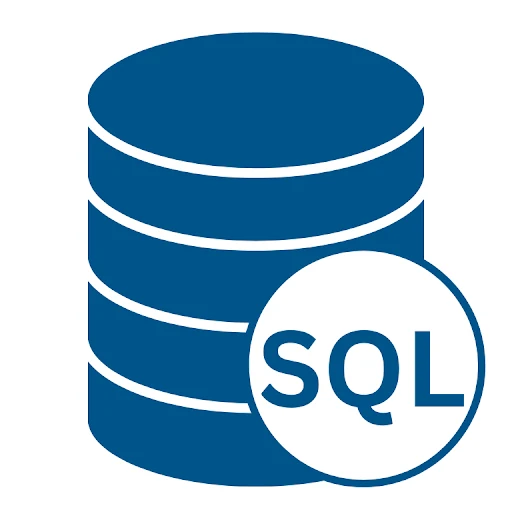
SQL is a widely used database language for working with structured data stored in relational databases. Data scientists use it to create, retrieve, update, and manage data efficiently across systems such as PostgreSQL, MySQL, and Oracle. It is especially useful for handling large datasets and extracting meaningful information through queries.
Why Use SQL for Data Science?
- Efficient Data Retrieval: Helps quickly extract and filter large volumes of data.
- Data Management: Used for creating, updating, and maintaining databases efficiently.
- Scalability: Suitable for handling enterprise-level and large-scale datasets.
- Standardized Language: Widely accepted and used across different database platforms.
- Easy Integration: Works seamlessly with tools and languages like Python and R.
Notebook Tools and Development Tool
4. Jupyter Notebook
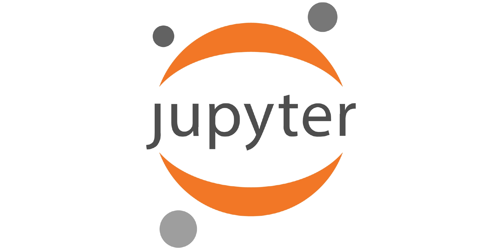
Jupyter Notebook is a widely used development tool in data science that allows users to work with code and output in a single workspace. It lets you execute code cell by cell, add notes or explanations, and view charts or results instantly. This makes it highly useful for analysis, experimentation, learning, and project documentation.
Why Use Jupyter Notebook for Data Science?
- Interactive Coding: Run code in small cells and view the output instantly for easy testing and debugging.
- Supports Multiple Languages: Works with Python, R, Julia, and more.
- Visualization Friendly: Easily display charts, tables, and graphs.
- Documentation Support: Combine code with text, notes, and explanations.
- Ideal for Learning and Testing: Great for experiments, tutorials, and model development.
5. Google Colab
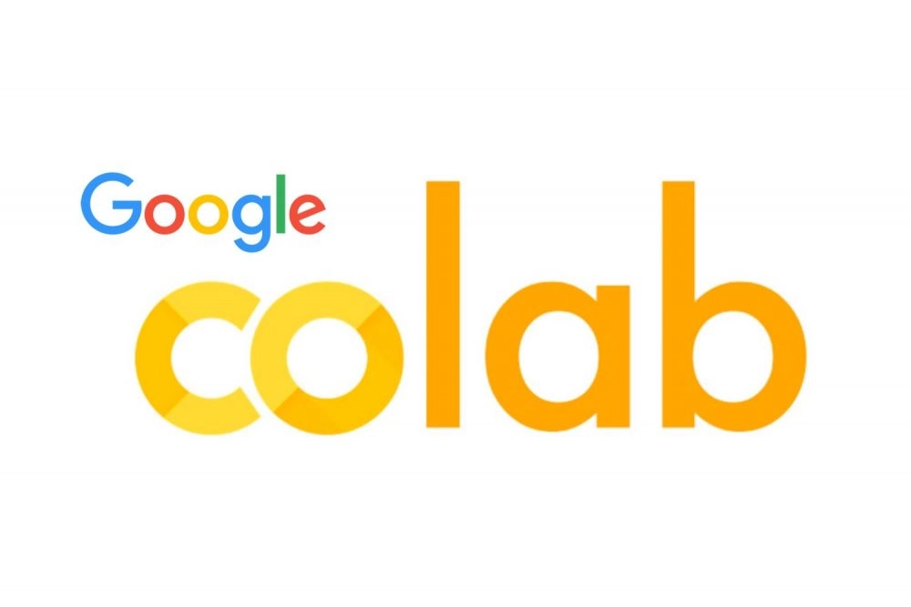
Google Colab is a cloud-based notebook tool commonly used in data science and machine learning. It allows you to write and run code online without any local installation or complex setup. With built-in Python support, free GPU access, and easy sharing options, it is an excellent choice for learning, experimentation, and collaborative development.
Why Use Google Colab for Data Science?
- Cloud-Based Access: Use it directly from the browser without installation.
- Free GPU and TPU Support: Helpful for machine learning and deep learning tasks.
- Easy Collaboration: Share notebooks and collaborate with others in real time, similar to Google Docs.
- Google Drive Integration: Save and access notebooks easily through Drive.
- Beginner Friendly: Simple interface for learning and testing code quickly.
Data Analysis Libraries
6. Pandas
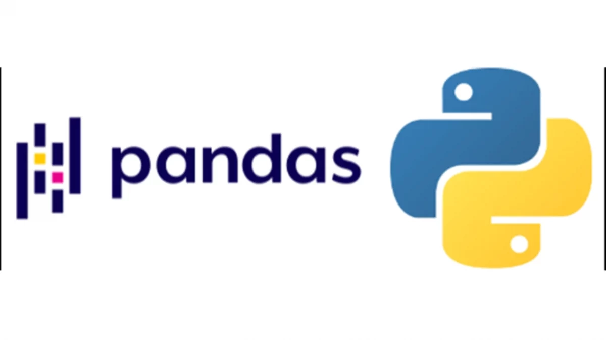
Pandas is one of the most widely used Python libraries in data science for data manipulation and analysis. It helps users work with structured data in tables, rows, and columns, making tasks like cleaning, filtering, sorting, and analyzing datasets much easier. It is especially useful for handling CSV, Excel, and database data efficiently.
Why Use Pandas for Data Science?
- Easy Data Handling: Work with rows, columns, and tabular datasets efficiently.
- Data Cleaning: Simplifies handling missing values, duplicates, and formatting issues.
- Powerful Analysis: Supports filtering, grouping, merging, and statistical operations.
- File Support: Easily reads and writes CSV, Excel, JSON, and SQL data.
- Python Integration: Works seamlessly with NumPy, Matplotlib, and Scikit-learn.
7. NumPy
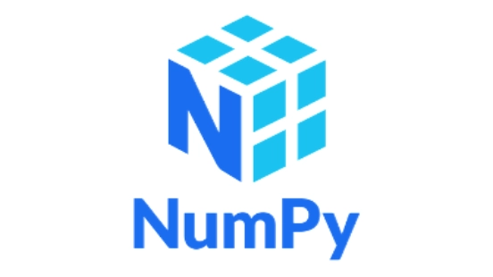
NumPy is a powerful Python library widely used in data science for numerical computing and array operations. It provides fast and efficient support for working with large multidimensional arrays, matrices, and mathematical functions. Data scientists use it for calculations, data processing, and as the foundation for many other libraries.
Why Use NumPy for Data Science?
- Fast Array Operations: Efficiently handles large arrays and matrices.
- Mathematical Functions: Supports advanced mathematical and statistical calculations.
- Better Performance: Faster than standard Python lists for numerical tasks.
- Matrix Support: Useful for linear algebra and scientific computing.
- Library Integration: Works smoothly with Pandas, SciPy, and machine learning libraries.
8. SciPy
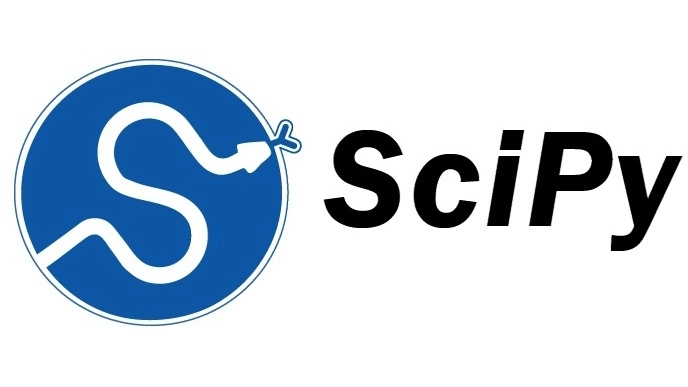
SciPy is a powerful Python library built on NumPy and widely used for scientific computing and advanced data analysis. It provides functions for optimization, statistics, linear algebra, signal processing, and mathematical calculations. Data scientists often use it for complex computations and research-based data tasks.
Why Use SciPy for Data Science?
- Advanced Calculations: Supports optimization, integration, and complex mathematical functions.
- Statistical Tools: Useful for statistical analysis and hypothesis testing.
- Scientific Computing: Ideal for research, simulations, and engineering tasks.
- Built on NumPy: Extends NumPy with additional scientific functions.
- High Performance: Efficient for handling large-scale numerical operations.
9. Scikit-learn
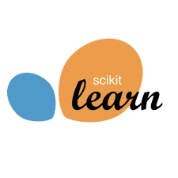
Scikit-learn is a popular Python library used for machine learning and predictive modeling in data science. It offers simple and efficient tools for tasks like classification, regression, clustering, and model evaluation. Data scientists widely use it to build, train, and test models quickly and effectively.
Why Use Scikit-learn for Data Science?
- Machine Learning Models: Supports classification, regression, and clustering algorithms.
- Easy to Use: Simple syntax makes model building and testing easier.
- Data Preprocessing: Includes tools for scaling, encoding, and feature selection.
- Model Evaluation: Provides accuracy scores, confusion matrices, and validation tools.
- Python Compatibility: Works well with libraries like NumPy, Pandas, and Matplotlib for complete data science workflows.
10. Matplotlib
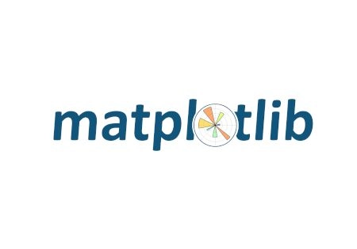
Matplotlib is a commonly used Python library for data visualization in data science. It helps users create charts, graphs, and plots to present data in a clear and meaningful way. From simple line charts to complex histograms and scatter plots, it is highly useful for analyzing trends and patterns in data.
Why Use Matplotlib for Data Science?
- Data Visualization: Create line charts, bar graphs, pie charts, and scatter plots easily.
- Trend Analysis: Helps identify patterns, comparisons, and changes in data.
- Customizable Charts: Offers control over labels, axes, titles, and styles.
- Integration Support: Works well with NumPy and Pandas datasets.
- Beginner Friendly: Simple and widely used for learning visualization concepts.
Upcoming Masterclass
Attend our live classes led by experienced and desiccated instructors of Wscube Tech.


Machine Learning & Deep Learning Tools
11. TensorFlow
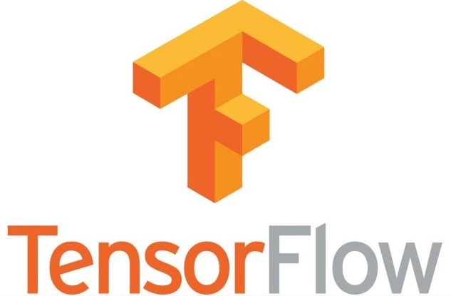
TensorFlow is a powerful open-source framework widely used for machine learning and deep learning in data science. Developed by Google, it helps users build, train, and deploy neural networks and AI models efficiently. It is commonly used for image recognition, natural language processing, and predictive analytics.
Why Use TensorFlow for Data Science?
- Deep Learning Support: Ideal for building neural networks and complex AI models.
- Scalable Framework: Works efficiently for both small projects and large-scale applications.
- Model Deployment: Supports easy deployment on web, mobile, and cloud platforms.
- GPU and TPU Support: Speeds up training for large datasets and deep learning tasks.
- Strong Community: Backed by extensive documentation and a large developer community.
12. PyTorch
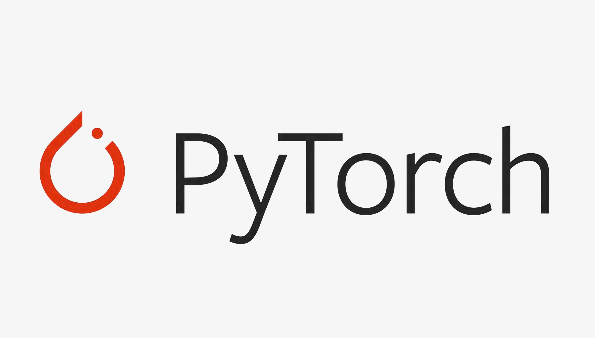
PyTorch is a commonly used open-source deep learning framework in data science and artificial intelligence. Developed by Meta Platforms, it is known for its flexibility, dynamic computation graph, and ease of use. It is commonly used for building neural networks, research projects, computer vision, and natural language processing applications.
Why Use PyTorch for Data Science?
- Deep Learning Framework: Ideal for building and training neural networks.
- Dynamic Computation Graph: Allows you to modify models during runtime, making it easier to experiment and debug.
- Research Friendly: Widely preferred for AI research and experimentation.
- GPU Support: Speeds up model training with efficient hardware acceleration.
- Python Based: Simple syntax and strong integration with Python libraries.
13. Keras
Keras is a high-level deep learning library widely used in data science for building neural networks and AI models. It offers a user-friendly and intuitive interface, making deep learning accessible for both beginners and professionals. Keras is commonly used with TensorFlow as its backend for efficient model training and deployment.
Why Use Keras for Data Science?
- Easy to Learn: Simple syntax makes deep learning easier to understand.
- Fast Model Building: Helps you quickly create and train neural networks with minimal code.
- Works with TensorFlow: Integrates smoothly with TensorFlow for efficient performance and deployment.
- Beginner Friendly: Ideal for learning, experimentation, and understanding deep learning workflows.
- Supports Advanced Models: Useful for building CNNs, RNNs, and other complex neural network architectures.
14. BigML
BigML is a cloud-based machine learning platform widely used in data science for building predictive models without heavy coding. It offers an easy-to-use interface for data preprocessing, visualization, model training, and deployment. It is especially helpful for beginners as well as businesses looking for quick machine learning solutions.
Why Use BigML for Data Science?
- No-Code and Low-Code Support: Build machine learning models with minimal coding effort.
- Cloud-Based Platform: Access projects and models online from anywhere.
- Predictive Modeling: Useful for classification, regression, clustering, and forecasting.
- Easy Visualization: Provides built-in charts and model visualizations.
- Beginner-Friendly: A simple interface makes it ideal for learning and experimentation.
15. WEKA
WEKA is an open-source machine learning and data mining tool widely used for data analysis, predictive modeling, and academic research. Developed by the University of Waikato, it offers a simple graphical interface for applying machine learning algorithms without extensive coding. It is especially useful for beginners, students, and researchers.
Why Use WEKA for Data Science?
- Easy Graphical Interface: Helps users build and test models without complex coding.
- Multiple Algorithms: Supports classification, clustering, regression, and association rules.
- Data Preprocessing: Includes tools for cleaning, filtering, and transforming datasets.
- Research Friendly: Commonly used in education and machine learning research.
- Open Source: Free to use with strong community and academic support.
Big Data & Cloud Platforms
16. Apache Hadoop
Apache Hadoop is an open-source framework used for managing and processing large-scale datasets across distributed systems. It allows users to work with high-volume data efficiently by distributing tasks across multiple machines, making it ideal for scalable and high-performance data processing.
Why Use Apache Hadoop for Data Science?
- Big Data Processing: Helps process and analyze large-scale datasets efficiently across distributed environments.
- Scalability: Allows easy expansion of storage and processing power by adding more machines.
- Distributed Storage: Uses HDFS to store data securely and reliably across multiple systems.
- Fault Tolerance: Automatically manages system failures by replicating data across nodes.
- Cost-Effective: Runs on commodity hardware, helping reduce overall infrastructure costs.
17. Apache Spark
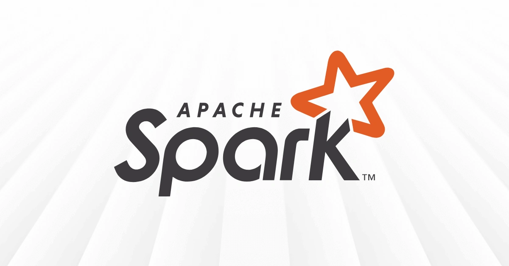
Apache Spark is a powerful open-source framework used for fast big data processing and large-scale data analytics. It is designed to process large datasets quickly using in-memory computing, making it faster than traditional frameworks. Spark is widely used for data processing, machine learning, real-time analytics, and big data applications.
Why Use Apache Spark for Data Science?
- Fast Processing: Uses in-memory computing to process data much faster than traditional disk-based systems.
- Big Data Support: Efficiently handles large-scale datasets and analytics tasks.
- Real-Time Processing: Useful for streaming and real-time data analysis.
- Machine Learning Support: Includes MLlib for machine learning tasks.
- Scalable Framework: Suitable for both small and enterprise-level projects.
18. Databricks
Databricks is a cloud-based data platform designed for big data processing, analytics, and machine learning workflows. Built on Apache Spark, it provides a unified workspace for teams to efficiently manage data engineering, analysis, and AI projects. It is widely used for scalable and enterprise-level data science applications.
Why Use Databricks for Data Science?
- Unified Workspace: Combines data engineering, analytics, and machine learning in one platform.
- Built on Spark: Delivers fast and scalable big data processing.
- Easy Collaboration: Allows multiple users to work together on notebooks and projects in real time.
- Cloud Integration: Connects smoothly with major cloud services and storage platforms.
- Enterprise Ready: Suitable for large-scale and real-time data science projects.
19. Snowflake
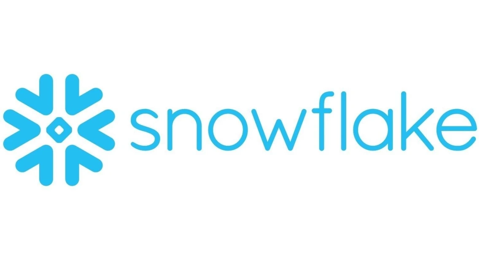
Snowflake is a cloud-based data platform widely used for data warehousing, analytics, and large-scale data processing. It helps organizations store, manage, and analyze structured as well as semi-structured data efficiently. Its scalable architecture and fast query performance make it a popular choice for modern data science workflows.
Why Use Snowflake for Data Science?
- Cloud Data Warehousing: Efficiently stores and manages large datasets in the cloud.
- High Scalability: Easily scales storage and computing resources as needed.
- Fast Query Performance: Processes complex queries quickly for faster insights.
- Data Sharing: Allows secure data sharing across teams and organizations.
- Supports Multiple Data Types: Works with structured and semi-structured data formats such as JSON, Avro, and Parquet.
20. Google Cloud Platform (GCP)
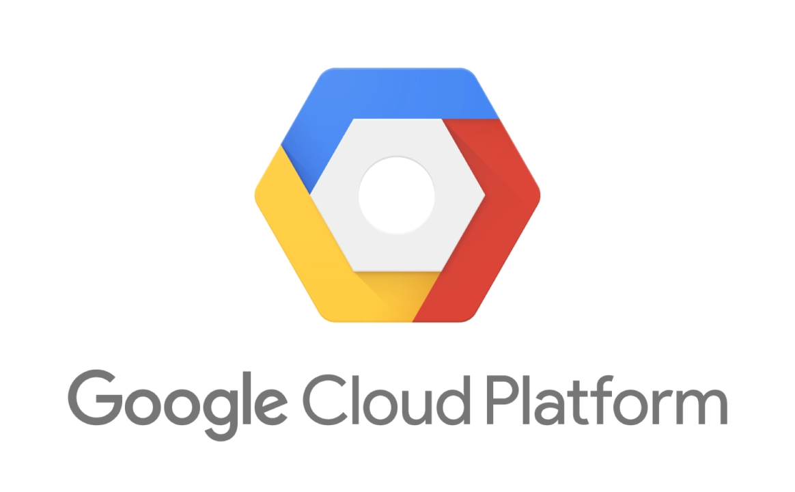
Google Cloud Platform (GCP) is a cloud computing platform widely used in data science for data storage, analytics, machine learning, and model deployment. It provides scalable cloud services and powerful tools like BigQuery and Vertex AI, making it ideal for handling large-scale data science projects.
Why Use Google Cloud Platform for Data Science?
- Cloud Scalability: Easily scales storage and computing resources based on project needs.
- Big Data Analytics: Supports large-scale data analysis and processing workflows.
- Machine Learning Tools: Includes powerful AI and ML services for model building and deployment.
- Real-Time Access: Access data and tools from anywhere through the cloud.
- Enterprise Ready: Suitable for large organizations and advanced data science applications.
Read More Data Related Guides
Data Visualization & BI Tools
21. Tableau
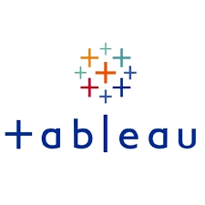
Tableau is a popular business intelligence platform used to convert raw data into meaningful visual reports, charts, and interactive dashboards. It is widely preferred by data analysts and data scientists for presenting insights clearly, helping organizations make faster and more informed decisions.
Why Use Tableau for Data Science?
- Interactive Dashboards: Create dynamic and easy-to-understand dashboards.
- Powerful Visualization: Supports charts, graphs, maps, and reports.
- Easy Data Connection: Connects with databases, spreadsheets, and cloud platforms.
- Real-Time Insights: Helps monitor and analyze data in real time.
- User Friendly: Simple drag-and-drop interface for quick visualization.
22. Microsoft Power BI
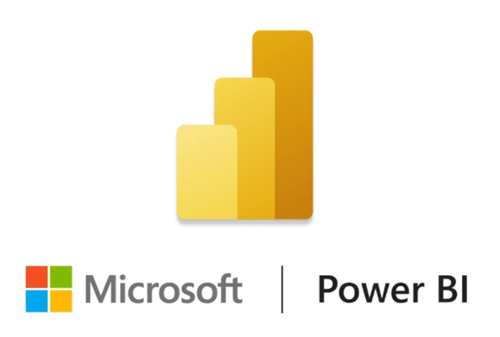
Microsoft Power BI is a powerful business intelligence and data visualization tool used to convert raw data into meaningful reports, charts, and interactive dashboards. It helps data professionals analyze trends, monitor performance, and present insights in a clear visual format, making data interpretation faster and more effective.
Why Use Microsoft Power BI for Data Science?
- Interactive Dashboards: Creates dynamic reports and visual dashboards.
- Easy Data Integration: Connects seamlessly with multiple data sources like Excel, SQL databases, and cloud services.
- Real-Time Monitoring: Helps track live data and performance metrics.
- User Friendly: Simple interface with drag-and-drop features.
- Business Insights: Supports faster and data-driven decision-making.
23. D3.js
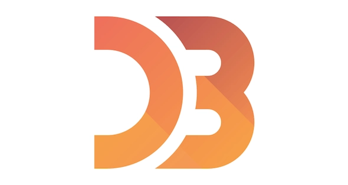
D3.js is a powerful JavaScript library used for creating dynamic and interactive data visualizations on web browsers. It helps users transform raw data into visually appealing charts, graphs, maps, and dashboards. D3.js is widely used in data science and web analytics for building custom visual reports with high flexibility.
Why Use D3.js for Data Science?
- Interactive Visualizations: Create dynamic charts, graphs, maps, and dashboards with user interaction.
- Highly Customizable: Offers full control over design, styles, animations, and chart behavior.
- Web-Based Visualization: Works directly in web browsers using HTML, CSS, and SVG.
- Data Storytelling: Helps present insights and trends in an engaging visual format.
- Flexible Framework: Suitable for simple charts as well as complex custom visualizations.
Statistical & No-Code Tools / Low-Code Tools
24. IBM SPSS
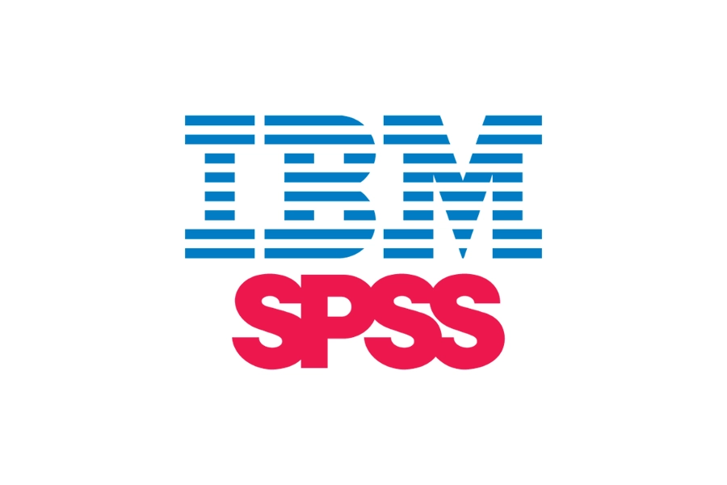
IBM SPSS is a popular software tool used for statistical analysis, predictive modeling, and data management. It is widely preferred by researchers, analysts, and business professionals for performing statistical tests, forecasting trends, and generating visual reports. Its easy-to-use interface makes it best for both beginners and experienced users.
Why Use IBM SPSS for Data Science?
- Statistical Analysis: Performs advanced statistical tests and detailed data analysis efficiently.
- User-Friendly: Offers an easy interface for beginners and professionals alike.
- Data Management: Helps organize, clean, and prepare datasets efficiently.
- Predictive Modeling: Supports forecasting, trend analysis, and predictive insights generation.
- Reporting Tools: Creates charts, tables, and clear visual reports easily.
25. KNIME
KNIME is a widely used open-source data analytics and workflow automation platform designed for data science, machine learning, and reporting. It provides a visual drag-and-drop interface that allows users to build data workflows without extensive coding. KNIME is especially useful for data preparation, model building, and automated analytics tasks.
Why Use KNIME for Data Science?
- No-Code Interface: Uses drag-and-drop workflows for simple and efficient data processing.
- Data Preparation: Helps clean, transform, and organize datasets efficiently.
- Machine Learning Support: Useful for building, testing, and evaluating predictive models.
- Workflow Automation: Automates repetitive data analysis, reporting, and workflow tasks to improve efficiency and save time.
- Beginner Friendly: Suitable for both beginners and advanced users.
Also Read: How to Become a Data Scientist? Beginner’s Guide
How to Choose the Right Data Science Tool
Choosing the right tool depends on your project needs, skill level, and goals. Using the right data science tools effectively can improve productivity and workflow. Below are the key factors to consider:
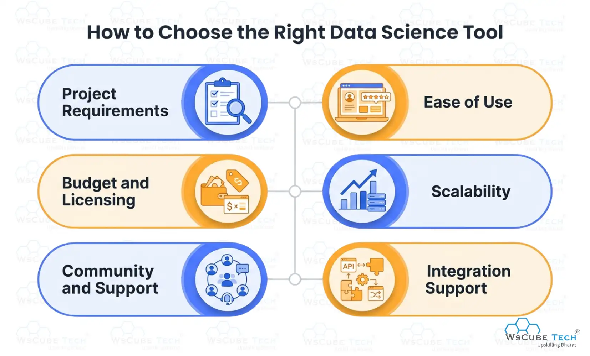
- Project Requirements: Choose a tool based on the type of work you need to perform, such as data analysis, visualization, machine learning, big data processing, or reporting tasks for your project.
- Ease of Use: Select a tool that matches your skill level, offering simple interfaces for beginners and advanced features with customization options for professionals to work efficiently and comfortably on different data science tasks.
- Scalability: Ensure the tool can handle growing datasets and increased workload efficiently, especially if you are working on enterprise-level or long-term projects.
- Integration Support: Prefer tools that integrate easily with programming languages, databases, cloud platforms, and other software used in your workflow.
- Budget and Licensing: Consider whether an open-source or paid tool fits your budget, project scope, and long-term usage requirements.
- Community and Support: Choose tools with strong documentation, active communities, and regular updates to make learning and troubleshooting easier.
If you want structured guidance while learning these tools, you can explore a beginner-friendly data science course by WsCube Tech that covers tools, concepts, and real-world applications in a simple and practical way.
Explore Our Data Related Courses
| Online Data Analytics Course | Live Internship + 100% Job Support |
| Online Business Analytics Course | Live Internship + 100% Job Support |
| Online Data Science Course | Live Internship + 100% Job Support |
Best Data Science Tools for Beginners
When starting your journey in data science, choosing beginner's data science tools is important for building a strong foundation. Beginner-friendly tools usually offer simple interfaces, easy-to-follow learning resources, and essential features for coding, analysis, visualization, and machine learning.
- Python
- Jupyter Notebook
- Google Colab
- Pandas
- NumPy
- Matplotlib
- Scikit-learn
- KNIME
- IBM SPSS
- Tableau
- Microsoft Power BI
Advanced Data Science Tools for Professionals
Advanced data science tools are designed for professionals who work with large datasets, complex analytics, machine learning models, and big data systems. These tools offer high scalability, automation, advanced visualization, and support for real-time processing, making them ideal for enterprise-level projects, research, and AI-driven applications.
- Apache Spark
- Databricks
- Snowflake
- TensorFlow
- PyTorch
- Keras
- Apache Hadoop
- D3.js
- Tableau
- Microsoft Power BI
Recommended Professional Certificates
Data Analytics Course with Gen AI
Data Science Course with Internship & Placement Support
Open-Source vs Paid Data Science Tools
Below is a comparison of open-source and paid data science tools to help you understand which option is best for your needs:
| Feature / Aspect | Open-Source Data Science Tools | Paid Data Science Tools |
| Cost | Free to use, no licensing fees | Requires subscription or one-time purchase |
| Examples | Python, R, Jupyter Notebook, Apache Spark | Microsoft Power BI, Tableau, SAS |
| Updates & Maintenance | Managed by open-source communities | Regular official updates from the company |
| Ease of Use | May have a steeper learning curve; flexible | User-friendly, often with drag-and-drop interfaces |
| Integration | Works well with other open-source tools; flexible | Smooth integration with enterprise software and cloud platforms |
| Customization | Highly customizable; code-level control | Customization available but limited to tool features |
| Scalability | Suitable for small to large projects | Designed for enterprise-level scalability |
| Security & Compliance | Depends on the implementation; may require manual setup | Includes enterprise-level security and compliance features |
| Best For | Researchers, students, developers, startups | Enterprises, business analysts, large-scale projects |
| Learning Resources | Extensive free resources online | Structured training, certifications, official tutorials |
Also Read: Data Analyst vs. Data Scientist: Key Differences & Comparison
Future Trends in Data Science Tools
Data science tools are rapidly evolving with smarter automation, cloud innovation, and AI-driven capabilities. Below are the future trends to watch:
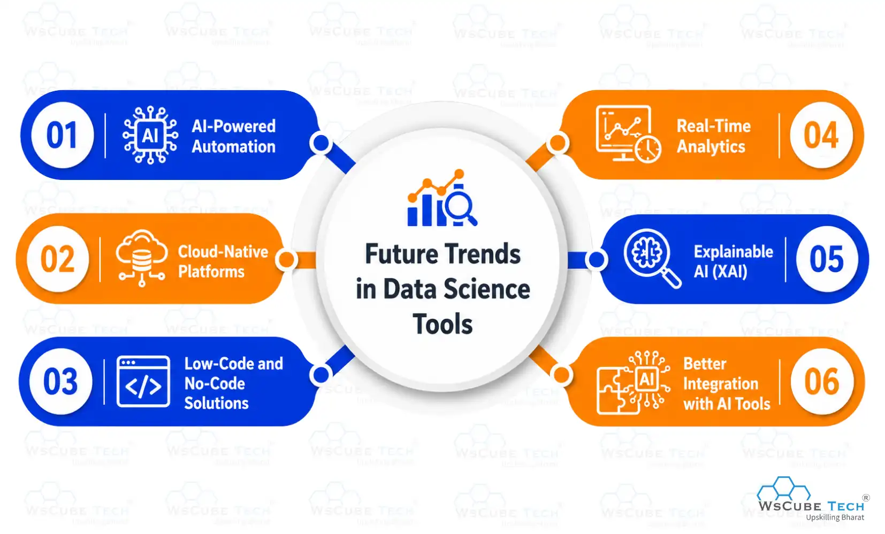
- AI-Powered Automation: Future tools will automate data cleaning, model selection, and reporting tasks, helping users save time, reduce manual work, improve efficiency, and focus more on extracting insights and building smarter data-driven strategies.
- Cloud-Native Platforms: More tools will shift toward cloud-based environments, offering better scalability, remote access, real-time collaboration, and faster processing for large-scale data science workflows.
- Low-Code and No-Code Solutions: Emerging platforms will make data science more accessible by allowing users to build models and workflows with minimal coding knowledge, benefiting beginners and business teams.
- Real-Time Analytics: Future tools will increasingly support instant data processing and live dashboards, enabling faster monitoring, trend analysis, and immediate response to changing data patterns.
- Explainable AI (XAI): Upcoming tools will focus on model transparency, helping users understand how AI models make predictions and improving trust, compliance, and accountability in data-driven systems.
- Better Integration with AI Tools: Future platforms will integrate more deeply with machine learning, deep learning, and generative AI frameworks to deliver smarter, more advanced analytics solutions.

FAQs About Data Science Tools
Data science tools are software, programming languages, and platforms used for data collection, cleaning, analysis, visualization, machine learning, and reporting to help users extract meaningful insights from raw data.
Beginners can start with tools like Python, Microsoft Power BI, and Tableau, as they offer simple interfaces, strong community support, and easy learning resources for data analysis and visualization tasks.
Python is widely used because it is easy to learn, highly versatile, and supports powerful libraries like pandas, NumPy, and scikit-learn.
Python is mainly preferred for machine learning and general programming, while R is more focused on statistics, data visualization, and research-based data analysis.
The best tools for data visualization include Matplotlib, Tableau, Microsoft Power BI, and D3.js for creating charts and dashboards.
Popular machine learning tools include scikit-learn, TensorFlow, PyTorch, and Keras for building predictive and AI models.
SQL is used to retrieve, filter, manage, and analyze structured data stored in relational databases, making it essential for working with large datasets efficiently.
Common open-source tools include Python, R, Jupyter Notebook, Apache Spark, and Apache Hadoop.
Some of the best paid tools are Tableau, Microsoft Power BI, SAS, and IBM SPSS Statistics.
Apache Spark and Apache Hadoop are widely used for big data processing, distributed storage, and handling large-scale datasets across multiple systems.
Jupyter Notebook runs locally on your system, while Google Colaboratory is cloud-based and offers easy sharing with free GPU support.
Professional data scientists commonly use Apache Spark, TensorFlow, PyTorch, Databricks, and Snowflake.
Choose a data science tool based on your skill level, project requirements, and budget. Beginners should start with simple tools, while professionals can use advanced tools for machine learning, big data, and analytics.
Conclusion
Data science tools play an important role in turning raw data into meaningful insights, helping individuals and organizations make smarter, data-driven decisions. From beginner-friendly options to advanced platforms, each tool offers unique features for data analysis, visualization, and modeling.
Choosing the right tool should depend on your goals, experience level, and the type of project you are working on. Understanding how different tools work makes it easier to improve efficiency, boost performance, and manage data-related tasks more effectively.
Explore Our Free Tech Tutorials
| Python Tutorial | Java Tutorial | JavaScript Tutorial |
| C Tutorial | C++ Tutorial | HTML Tutorial |
| CSS Tutorial | SQL Tutorial | DSA Tutorial |
Practice Coding With Our Free Compilers
| Online Python Compiler | Online HTML Compiler | Online C Compiler |
| Online C++ Compiler | Online JS Compiler | Online Java Compiler |
Join Our On-Campus Data Science Program
Explore Our Free Courses


Leave a comment
Your email address will not be published. Required fields are marked *Comments (0)
No comments yet.